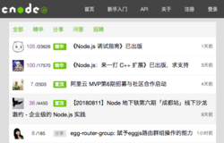

-
- Experience. 项目展示
-
CNODE社区
技术栈：vue-cli、webpack、axios、jQuery - 使用vue-cli搭建项目，webpack工具打包；根据cnode社区提供的API请求相关页面数据，引入axios发起请求；实践了vue组件的使用、父子组件传值，页面间使用vue-router进行状态切换
预览链接 源码链接 -
在线音乐播放器
技术栈：jQuery、CSS 3、HTML 5、七牛云数据管理 - 实践移动端布局，学习响应式原理以及动态rem方案，了解sass工具转译像素单位；ajax异步请求主页面和最新音乐的数据，歌曲通过上传至七牛云端进行存储管理；搜索tab函数节流问题，通过设置定时器，setTimeout等待用户输入搜索结果
 预览链接
源码链接
预览链接
源码链接
-
跳动的简历
技术栈：prism 代码高亮、marked 解析 markdown 内容 - 向style标签动态添加样式，pre 标签使得保留代码原有样式；引入 prism 对特定代码进行高亮处理，不同类名指定特定样式从而覆盖先前默认样式达到代码高亮的效果；引入 marked 解析markdown格式的内容，转换成html文档形式
预览链接 源码链接 -
豆瓣电影搜索
技能点：基于jQuery、豆瓣API接口实现电影查询 - 利用豆瓣官方提供的API接口，使用jsonp实现跨域请求，将返回的数据解析并渲染到页面；主要使用jQuery和jsonp实现项目，MVC思想进行代码的组织设计 预览链接 源码链接
-
在线画图工具
技术栈：原生Javascript、canvas元素API - 在线画板，学习并实践了canvas部分API；iconfont引入小图标，支持画笔粗细、颜色选择；拥有橡皮擦及一键清除功能，支持本地保存；通过特性检测判断用户使用的是触屏或非触屏设备，从而监听不同的事件 预览链接 源码链接



-
- Skill. 技能描述
-
HTML&CSS
根据 HTML5 标准编写语义化的文档结构
CSS布局：内联元素以及块级元素的水平居中、四种以上垂直居中方式
清除浮动的方法，如何触发BFC以及BFC的两个基本作用
移动端使用meta标签，@media媒体查询，动态rem编写响应式布局
JavaScript
学习ES6部分常用语法，在项目中使用let、const、箭头函数、模版字符串、解构赋值等
了解类的概念，以及extends继承的写法，promise及await的基本用法
熟悉闭包、原型链、作用域链、this、jsonp及ajax异步请求的原理、JS单线程的执行机制等重要知识
jQuery常用API，能使用jQuery制作轮播
HTTP
了解http基础知识、基本状态码、会使用开发者工具查看请求和响应
理解cookie、localStorage缓存机制、同源策略，跨域的基本方式
了解页面加载过程，阻塞与非阻塞机制，了解常见的前端性能优化手段
了解基本的Web安全知识，对XSS和CSRF攻击的防范
vue
学习了Vue框架，实践了父子组件通信兄弟组件通信原理、理解数据双向绑定的实质
vue周边生态，例如：vue-router制作前端路由，vuex对数据的状态管理
使用vue-cli脚手架搭建项目，webpack打包工具
其他
熟悉命令行基本操作、git常用命令，会使用Chrome等基本开发者工具
使用webpack打包工具进行基础配置，项目上传至github
了解Node.js部分基础知识，使用过 Node.js 搭建简易服务器，并在博客中做总结

马心悦
- 求职意向：前端工程师 -
-
- 联系方式
- 18292034074
- maxinyue0211
- jayce_ma.xa@foxmail.com
-
- 基本信息
- 马心悦/22岁
- 本科/西安工业大学/英语6级
- Github
- https://jaycemxy.github.io
-
- 个人简介
- - 热爱编程，对于新技术有探索欲望，关注技术动态
- - 喜爱阅读，关注图灵教育出版的相关书籍，通过阅读前端经典书目，与线上实践融会贯通
- - 自学能力和英语阅读能力强，善于看文档和搜索谷歌解决代码问题
- - 性格开朗，虚心学习，能与他人配合完成任务，能在相互协商的情况下以最优方案解决问题